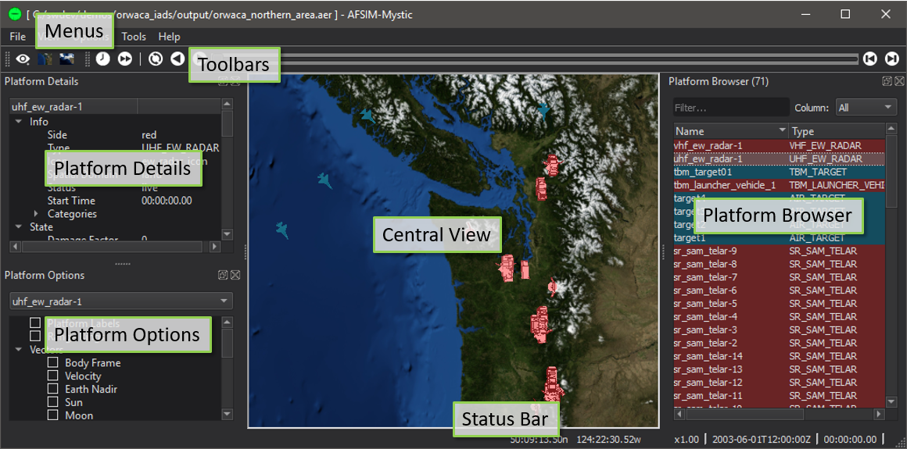

Mystic Reference Guide¶
The Mystic Reference Guide lists the features included within the application organized into various categories.
Start-up¶
Application Layout¶
This image above shows the layout of the Mystic application with the major components labeled.
Many of these components are dockable and may be moved to other locations in the window, or into their own ‘floating’ windows.
Menus
Dialogs, Views and Toolbars¶
Most of the Dialogs and Toolbars can be accessed through the View menu. A few are accessed through the Context menu.
Application Configuration¶
The following items control the appearance of Mystic.
Platforms¶
The following items describe interactions with Platforms not mentioned in the above sections.
Plug-in Features¶
The following is a comprehensive list of functionality provided by Mystic extensions.
- ACES Display - Mystic
- AFSIM Information - Mystic
- Air Combat Visualization - Mystic
- Aux Data - Mystic
- Battle Management - Mystic
- Behavior Analysis Tool - Mystic
- Bookmark Browser - Mystic
- Comms Visualization - Mystic
- Comment - Mystic
- Coverage Overlay - Mystic
- Cursor Info - Mystic
- Detection Report - Mystic
- Engagement Analysis - Mystic
- Event List - Mystic
- Event Marker - Mystic
- Head Down View - Mystic
- Head Up View - Mystic
- Interactions - Mystic
- Map Annotation - Mystic
- Map Display - Mystic
- Map Hover Information - Mystic
- Map Toolbar - Mystic
- Merge Recordings - Mystic
- Model Viewer - Mystic
- Orbital Data - Mystic
- Orbits - Mystic
- P6Dof Data - Mystic
- Performance - Mystic
- Platform Browser - Mystic
- Platform Details - Mystic
- Platform History - Mystic
- Position Converter Tool - Mystic
- Projector - Mystic
- Quantum Tasker Matrix - Mystic
- Relative Geometry - Mystic
- Routes - Mystic
- SA Display - Mystic
- Satellite Tether View - Mystic
- Scripted Platform Details - Mystic
- Sensor Volumes - Mystic
- SixDOF Data - Mystic
- Statistics - Mystic
- Terrain Tools - Mystic
- Tether View - Mystic
- Time Controller - Mystic
- Tracks - Mystic
- Unit Converter Tool - Mystic
- Video Capture - Mystic
- Visibility - Mystic
- Visual Effects - Mystic
- Waterfall Plots - Mystic
- WSF Draw - Mystic
- Zone Browser - Mystic